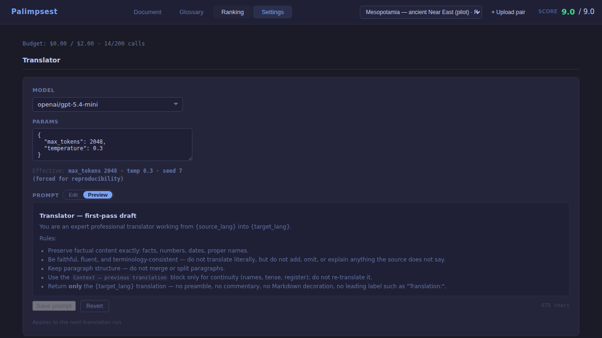
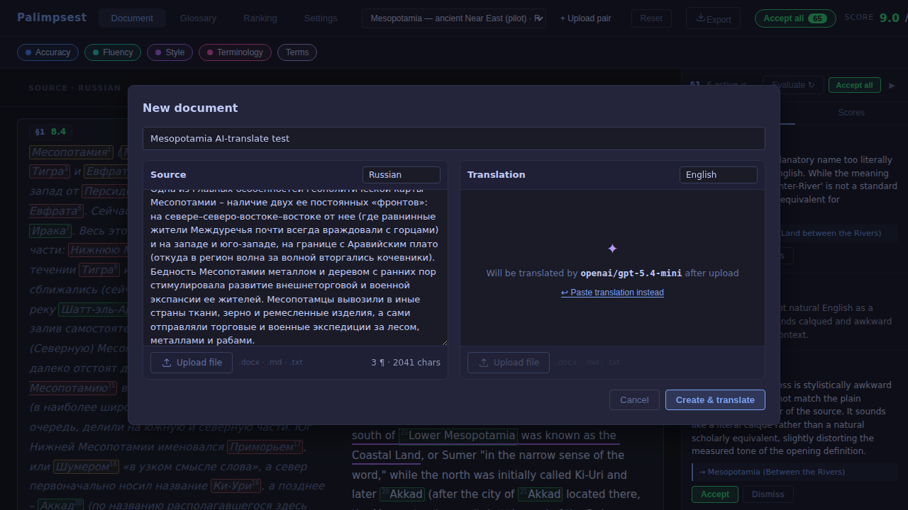
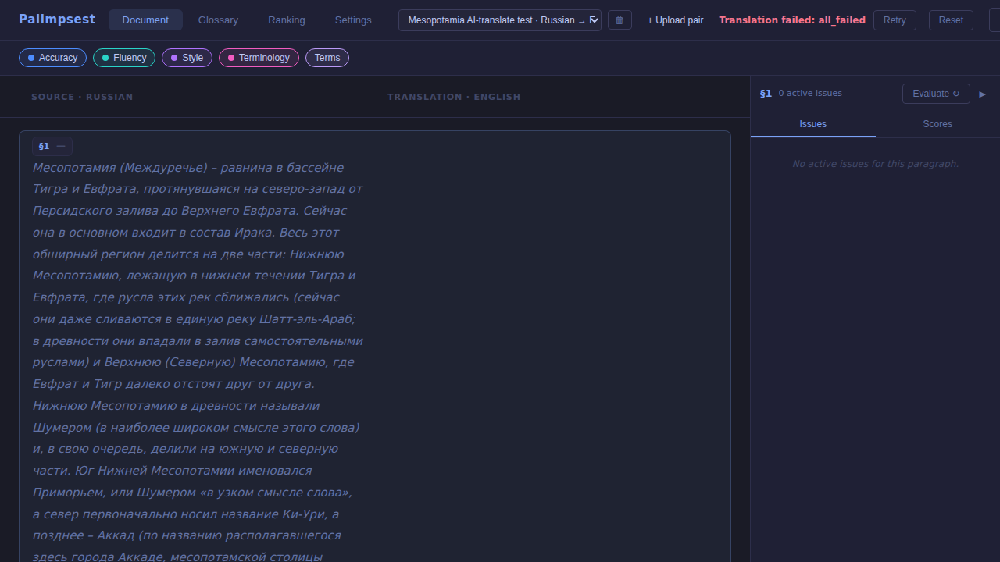
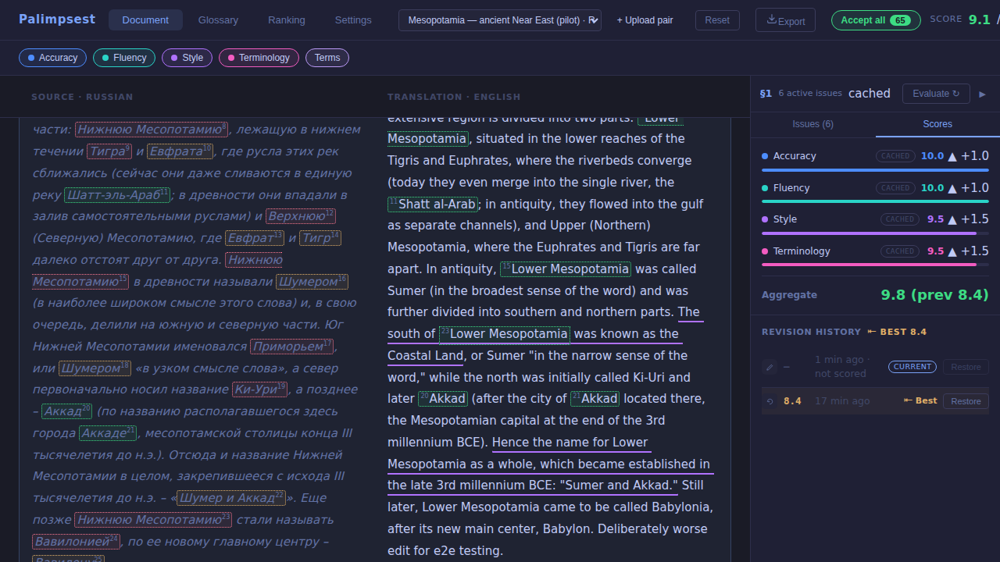
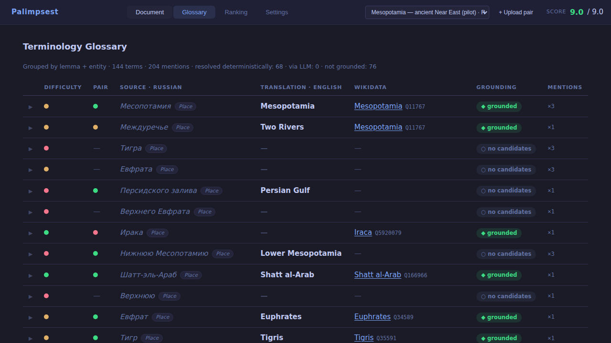
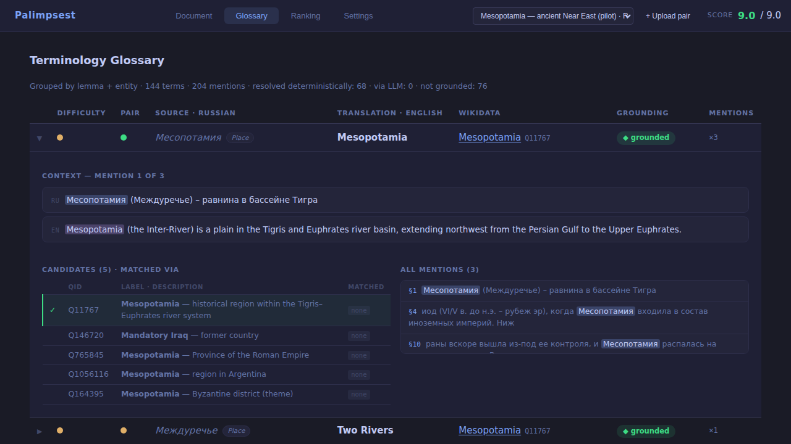
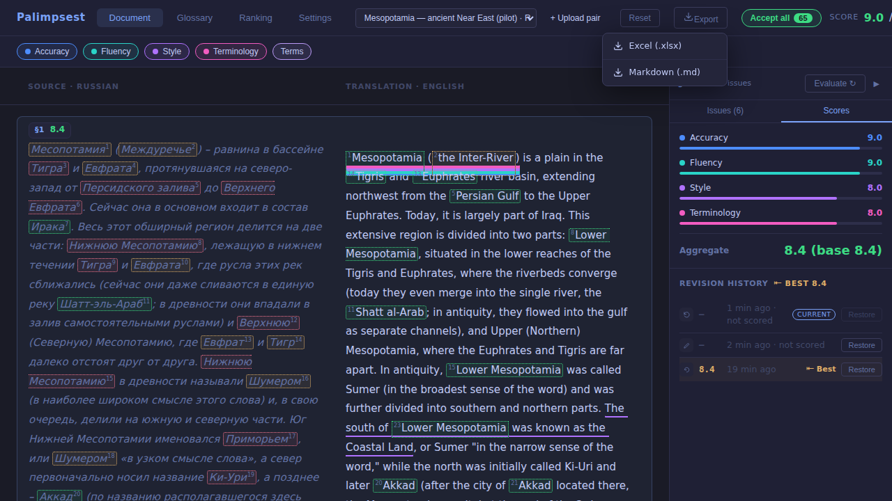

Все шесть фич wave-5 реализованы по отревьюированным спекам, протестированы (474 pytest + 259 vitest, production build, 34 e2e-скриншота, 0 серверных 500) и запушены в draft PR #4. Две внешние оговорки: живой LLM-путь в облачной песочнице блокируется WAF шлюза (продукт честно фейлится и ретраится; на твоём сервере с настоящим ключом OpenRouter путь живой), а деплой из этой сессии невозможен (SSH закрыт политикой) — подготовлен идемпотентный deploy/update-server.sh.
| Aspect | Score | Verdict |
|---|---|---|
| Спеки и ревью | 9 | хорошо |
| Backend | 9 | хорошо |
| Frontend / дизайн | 8.5 | хорошо |
| Unit-тесты | 9 | хорошо |
| E2E-покрытие | 7 | с оговорками |
| Данные глоссария | 6.5 | с оговорками |
| Документация | 8.5 | хорошо |
| Деплой | 4 | не закрыто |
Цель ночи: довести сайт до состояния «можно записывать 2-минутное видео для EMLP 2026» — все кнопки и базовые сценарии работают.
| Блок | Что сделано |
|---|---|
| Translator (S4) | Загрузка «только оригинал» → Create & translate; переводчик настраивается в Settings над Evaluators (модель из registry + редактируемый промпт + params); фоновый перевод с rolling-контекстом под budget-guard; прогресс-бейдж. translate:true принудительно гасит precompute — ревью поймало, что иначе платный judge оценил бы ПУСТЫЕ переводы и навсегда испортил baseline. |
| Глоссарий (S2) | Реализация 1-в-1 по твоему мокапу 2026-07-03: группировка по лемме+entity, grounding-бейджи, раскрываемый путь заземления (степпер → кандидаты → judge-карточка → mentions), клик по mention ведёт к абзацу. Плюс обогащение данных: 28 уникальных термов получили реальные Wikidata QID, 31 — реальных кандидатов; «Тигр/Тигра» слиты консервативным стеммингом. |
| История ревизий (S5) | Каждая версия текста сохраняется (target_revision), каждая оценка привязана к ревизии; ⭰ Best-маркер, блок Revision history, Restore в один клик. Оценки не подкручиваются — лучший вариант просто никогда не теряется. Кэш-фолбэк помечается бейджем cached. |
| Экспорт (S6) | GET /api/documents/{id}/export?format=xlsx|md: Excel с абзацным выравниванием Source/Translation и цветными порогами скоров; кнопка Export с меню. |
| Settings (S1) | Admin-токена в коде нет (на сервере — старый билд, лечится деплоем); Cultural Adaptation добит (на проде — enabled=0, не DELETE); промпты оценщиков редактируются на месте (Edit/Preview/Save); params моделей: whitelist + effectiveParams + читаемый inline-вид; Clear key; честные ошибки Remove/Test. |
| Окно загрузки (S3) | SVG-иконка вместо 📄, единый стиль панелей, drag-over подсветка, лимиты 40¶/4000 приходят с сервера (SSOT), подсказка блокировки называет реальную причину. |
| Инфраструктура | Первый механизм миграций (migrate.py, идемпотентный, на старте приложения + CLI); починен молчаливый no-op params у grounding-судьи; deploy/update-server.sh; graphify полностью удалён из репозитория. |
Ключевые решения: честность важнее косметики (деградация глоссария на пустых трассах и NULL-best для доисторических оценок показываются как есть); только детерминированное Wikidata-разрешение без LLM-гаданий (ложные матчи типа «Тигра→Тигра из Винни-Пуха» вычищены фильтрами, остаточный «Ура→река в Мурманской области» понижен вручную); процесс — спеки → 3-аспектное адверсариальное ревью (20 находок, из них 2 CRITICAL внесены ДО кода) → 3 параллельных Sonnet-лейна → e2e → фикс-раунд.
deploy/update-server.sh — одна команда с твоей машины..claude/agents/ (fastapi-developer, react-specialist, …) НЕ регистрируются в облачной сессии — dispatch-карта CLAUDE.md в cloud фактически не работает (файлы есть, harness их не поднял). Реализацию вели general-purpose агентами с явной моделью Sonnet. Требует отдельного разбора (вероятно, формат frontmatter).best активируется только для оценок после миграции; PR-футер «Generated by Claude Code» дописывает платформа поверх тела (один раз уже вычищен, может вернуться при следующем автообновлении).tsc -b чистый · vite build ок. Коммиты: 01fdc10 (backend), fff5496 (frontend), 17fc4a3 (фикс-раунд).docs/reports/e2e/wave5-run.md (коммит 74c6a8e). Найденные им 3 бага + пробел данных закрыты фикс-раундом 17fc4a3.3f8aedf, скрипт scripts/enrich_seed_terms.py.ff95aa2. Спеки: docs/superpowers/specs/2026-07-05-*.md.docs/superpowers/specs/2026-07-05-wave5-ui-mockup.html · канон глоссария: 2026-07-03-glossary-redesign-mockup.html.





